Observation
Due to its small indoor space, Terra had to restrict its customers from entering the cafe. Orders could only be placed over the phone. A menu was available on Terra’s website, but walk-up customers had difficulty reading the PDF menu on their mobile phones. Due to its layout, customers would zoom in and swipe around to read item descriptions, but the text was too pixelated to read legibly (see image below). A QR code was eventually posted outside the building that was a direct link to a downloadable PDF of the menu with a higher resolution. Many utilized the QR code. Some resorted to knocking on the door to ask for a physical menu. Few tried to peek through the window to read the inside menu on the back wall. Others only ordered off the "Specials" chalkboard nailed to the building's exterior wall.
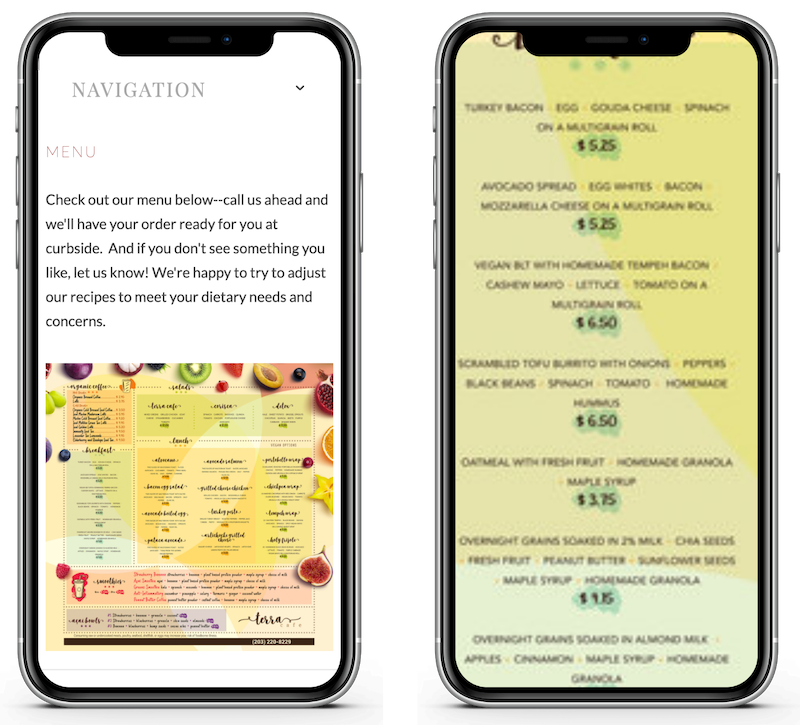Pretty design, but zoom in and it's barely legible.
Another common question was where one could learn of the cafe's latest specials (this Medium article gives great insight on why specials are beneficial to both customer and restaurant). At the time, customers could only learn of the specials either through Terra’s Instagram account, physically visiting the special’s board outside the building, or calling to ask staff to read off the list of specials over the phone. Those are all valid alternatives but none so easy or reliable.
Solution
It was clear to me that the customer's ordering experience needed improvement. Fixing the website seemed to be the answer. The website, accessible on any mobile device, can deliver necessary content to customers and help them complete their goal. With a limited budget and a short timeline, I decided to attack the aforementioned pain-points by primarily focusing on two solutions:
1. Create a responsive and mobile-friendly menu easy to access and read.2. Connect the cafe's Instagram account to the website (and Facebook page) so customers are up-to-date across multiple platforms.
Web Analytics
After gaining access to the cafe's Squarespace account, a look at the cafe's website analytics provided quantitative data that proved the necessity for a mobile-friendly design. Data showed that most customers viewed the website and menu on their mobile device, even before the pandemic.
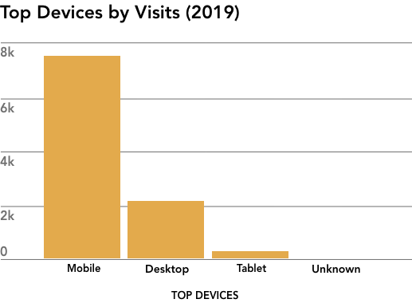
2019 Pageviews:
Mobile visits: 7,449
Desktop visits: 2,156
2019 Pageviews:
Mobile visits: 7,449
Desktop visits: 2,156
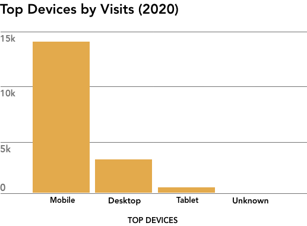
2020 Pageviews:
Mobile visits: 14,805
Desktop visits: 3,436
2020 Pageviews:
Mobile visits: 14,805
Desktop visits: 3,436
User Research
To ensure I was designing for Terra's customers, I performed field research to create a user persona. Over three shifts, I gathered data from 87 customers. 62% of Terra customers were females. Of the females, 51% were between 30-45 years old. My field research did not double-count repeat customers ("regulars"). In addition to light converstions with this sample group, as well as living within this community, I factored in my user persona that most of Terra's customers were employed and had children.
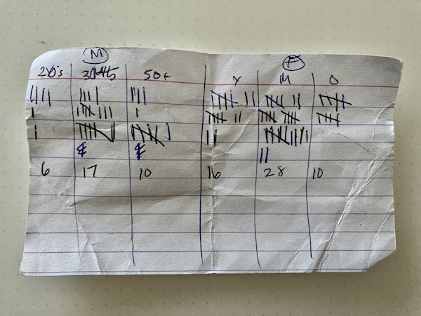My crude note-taking on customer data.
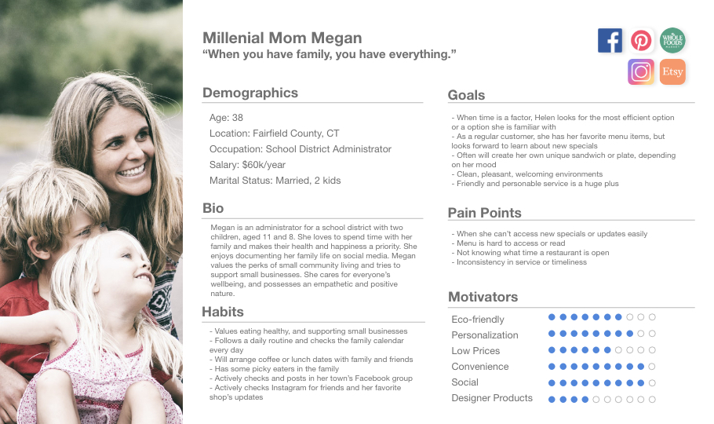
Content & Design Strategy
In my design I decided on strategic design elements to implement user experience acquisition strategies and draw customer attention.
✓ A vertical layout to accommodate the high number of mobile views.
✓ The inclusion of images as a merchandising tool, drawing attention to high margin items to up-sell orders.
✓ Informational heirarchy that places key information at the header and footer on every page (name, location, hours, phone number, and any COVID-19 related updates).
✓ A more informative 'About Us' page reflective of the unique service the cafe offers to all its guests, including customer testimonials. This practice of transparency helps prospective customers understand the values of the cafe, forming expectations and building trust.
Below are wireframes for the homepage, about us, and menu page:
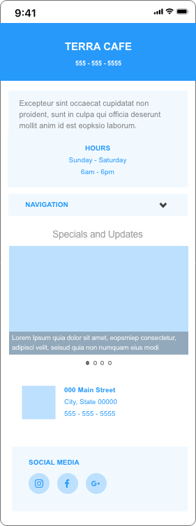
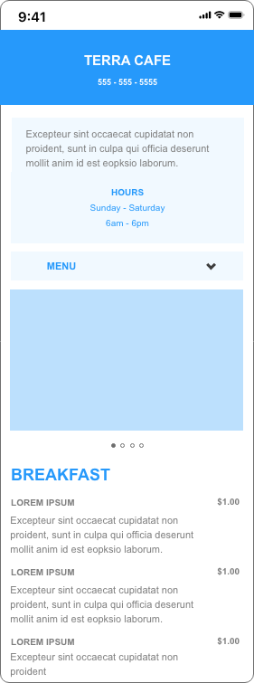
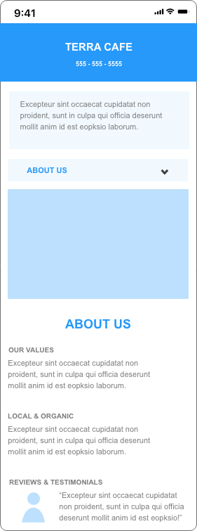
Final Design
The final design - Terra's Instagram is now linked to post onto the website's landing page, so customers can easily find information about new specials and updates. The final "About Us" page give customers a more personal look into the cafe's values and personality:
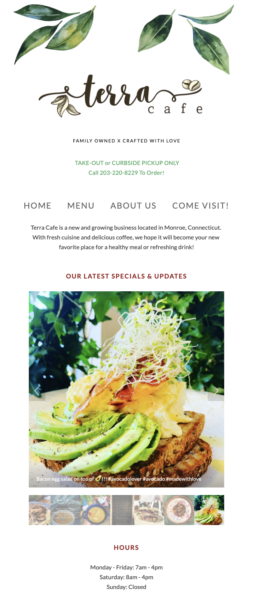
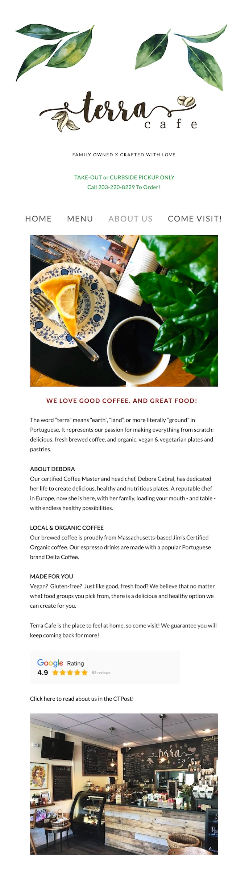
And below is the final Menu design in desktop and mobile view - I created custom HTML and CSS coding for the menu using a grid system layout. No zooming necessary.
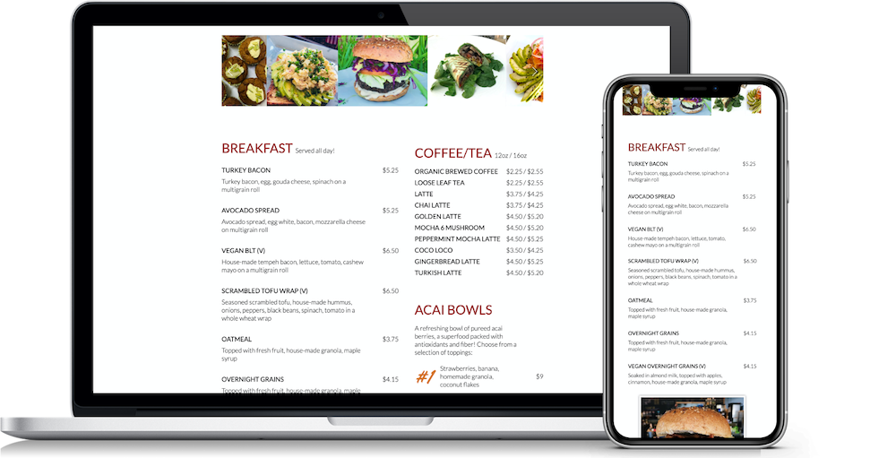
Click this link to view Github of code: View Github
Click here to view the Terra Cafe website: www.terracafect.com
Self-reflection
This was my first application and experience using Squarespace. I embraced a clean and simple look in accordance to the client's wishes. I found that this allowed for more intentional design decisions, minimized complexity for the user, and put focus on the most important elements.
Because of COVID-19, small businesses everywhere are in need of effective help in a timely fashion. I was happy to provide Terra Cafe with a quick and easy redesign and solutions that will hopefully increase their customer acquisition and retention as they continue business during these trying times.